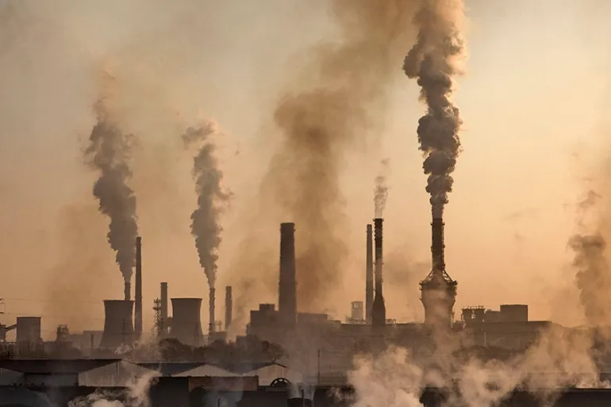
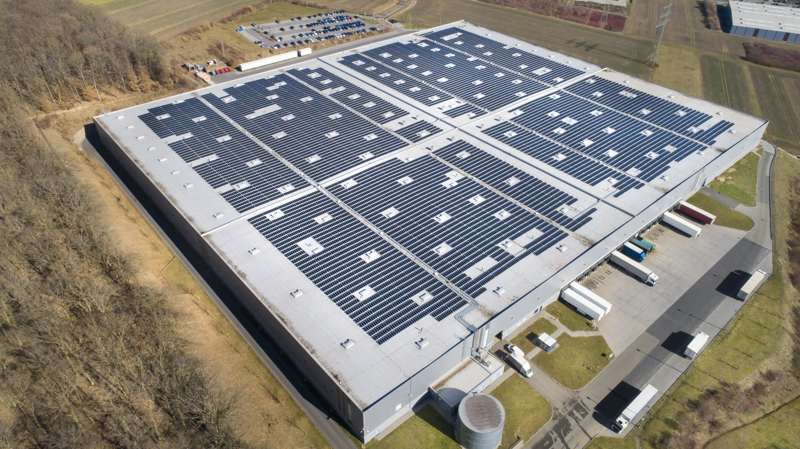
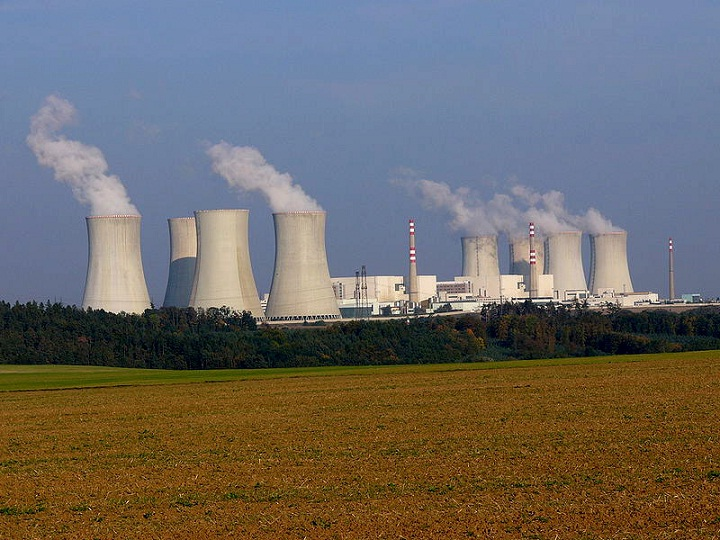
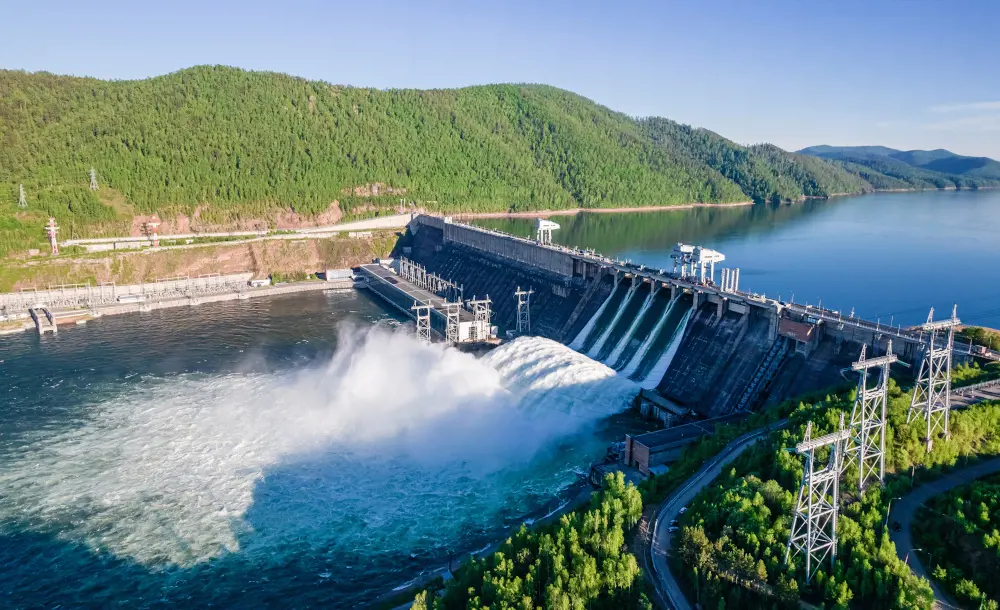

The World
of Sustaniable Energys

This is a example of the amount of emmisons coming of just a few cars sitting in traffic. Vehicals are responsible for a massive amount of CO2 emmisonslet into the atmasphere every year sadly in 2022 the total amount of emmisions from vehicals increased by 1.4% to 3.53 billion metric tons. However there is a clean and sustainable replacment to these vehicals. Click the button to go green and find out what!
Ah thats better! These are eletric cars where they give off no harmful emmisions into the Earths atmasphere, but instead are pluged in and charged where it can take on electrcity into its large battiers and use this to power the vehical all while producing no CO2.
This is a coal powered plant, as we can see veery karge amounts of emmisions are being let off into the atmasphere with coal buring being responsible for many environmentally harful chemicals being released making it very unsustainable.Coal buring releases 10,000 tons of sulphur dioxide every year which is responsible for acid rain. Hit the button to see a much more sustainable form of energy.
Ah thats better! This is a industrial campus that is fully powered through solar energy. As you can see there are a hugh amount of solar panles lining the roof of the campus which absord solar rays or sunlight and are capable of converting it into electrical energy. This type of energy is complety renewable and fully sustainable.
 This is a protroleum plant or oil plant. These plants are reponsible for many harmful toxins beiing released into the atmasphere This can be done through oil spills and the release of waste products which contain many hydrocarbons, heavy metals, radioactive materials and toxic chemicals all of which are deadly to vegitation and soils. General air pollution from these plants also contribute to large amounts of agricultural damage.
Ah thats better! These are turbines which are responsible for producing wind energy, they do this through a very simple process of allowing wind to turn the large propellors which spin around a rotor which spins a genrator that then creates electrcity.This is one of the oldest forms of renewable energy.
This is a nuclear energy plant. How they produce energy is through the heating process in the nuclear reactor which heats water to produce steam that then turns a turbine. This means that this form of energy is in fact renewable however this process leaves nuclear waste which is extremly toxic to anything it interacts with including all fish and bacteria life in water and vegataion and plant life.
Ah thats better! This is a hydro energy dam which uses the power of the water to once again turn large turbines and create clean, renwable and sustainable energy.
 